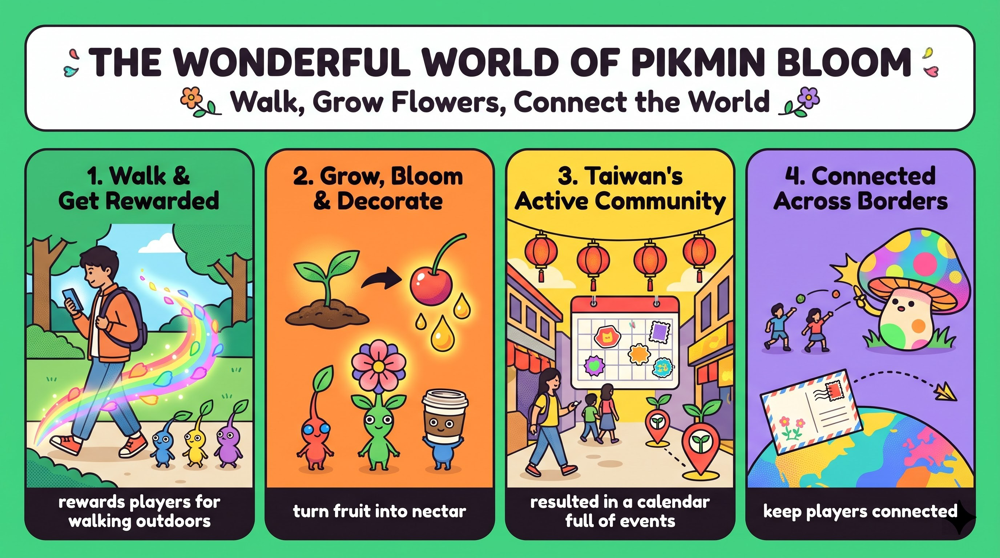

《皮克敏 Bloom》是免費 app，獎勵在戶外走路的玩家；你一邊走，一邊培育皮克敏、收集花瓣，在真實地圖上留下繽紛足跡。
rewards players for walking outdoors幼苗隨步數長大，拔出來加入隊伍；果實變成花蜜讓頭上開花，皮克敏還會依發現地點戴上飾品、帶回明信片。
turn fruit into nectar台灣社群從一開始就很熱情：高雄舉辦巡迴活動、嘉義藝術節的迷你健走，玩家在八個地點賺取金色幼苗。
resulted in a calendar full of events一起打巨型蘑菇、派對健走即時分享步數、明信片飛向世界各地；日常步伐變成連結人們的冒險。
keep players connectedyou (S) + have wanted (V) + a video game (O)，問句把 Have 移到句首。
that could help you stay active 是主格關代子句，修飾 a video game。
help + O + 原形 V（help you stay，to 可省）；stay active＝保持活躍；could 表可能性，語氣比 can 委婉。
Have you ever wanted（現在完成式問經驗）a video game（受詞）that could help you stay active?（主格關代子句）語塊 1（你曾經想要）➔ 語塊 3（能幫助你保持活躍的，提前）➔ 語塊 2（一款電玩遊戲）➔ 嗎
這是 Yes/No 問句，開頭的 Have you ever wanted 照順序翻「你曾經想要」，「嗎」留到最後。
a video game；往右邊看——could help you stay active 少了主詞。名詞後面＋缺主詞的子句，就是主格關代，that 自己當子句的主詞，整個子句在說明遊戲的功能。
help + O + (to) V：help you (to) stay active；stay + Adj.：stay healthy／calm。Have you ever ...? 問句拉近讀者，是學測作文常見的引言技巧。Pikmin Bloom (S) + is (V) + a free-to-download app (C)。
that rewards players for walking outdoors 是主格關代子句，修飾 app。
reward sb for V-ing（因……而獎勵某人）；free-to-download 是複合形容詞；outdoors 是副詞，前面不加 in。
Pikmin Bloom is a free-to-download app（主幹（複合形容詞））that rewards players（主格關代子句）for walking outdoors.（介系詞片語（原因））語塊 1（《皮克敏 Bloom》是一款免費下載的應用程式）➔ 語塊 2（會獎勵）➔ 語塊 3（在戶外走路的，提前）➔ 玩家
主幹先翻「《皮克敏 Bloom》是一款免費下載的應用程式」，到這裡先斷句。
a free-to-download app，右邊 rewards players ... 缺主詞 ➔ 主格關代，動詞 rewards 加 s，因為先行詞 app 是單數。
reward sb for sth／V-ing：The teacher rewarded us for our hard work.；outdoors（adv.）↔ indoors。free-to-download／easy-to-use 一個字頂一個子句，作文寫產品介紹很好用。you (S) + raise ..., collect ..., and leave ...。
As you move 是時間副詞子句（as＝當……時、一邊……一邊）；破折號中間是同位語，解釋 Pikmin。
As you move,（as 時間子句）you raise Pikmin（主幹動詞一）—tiny, plant-like creatures—（破折號同位語）collect flower petals,（主幹動詞二）and leave colorful trails on a real-world map.（主幹動詞三＋地點）語塊 1（你一邊移動）➔ 語塊 2（一邊培育皮克敏）➔ 語塊 3（同位語）➔ 語塊 4（收集花瓣）➔ 語塊 5 地點提前（在真實世界的地圖上）➔ 留下繽紛的足跡
句首 As you move 是背景，直接翻「你一邊移動」，後面接「一邊培育皮克敏」。
As you move：as 右邊是完整的主詞＋動詞，是副詞子句，交代「一邊移動」的背景。—tiny, plant-like creatures—：破折號中間沒有動詞，只是名詞片語，解釋左邊的 Pikmin 是什麼，屬於同位語，不是子句。leave a trail of N：The dog left a trail of mud.；N-like＝像……的：childlike、dreamlike。A, B, and C，比連用三次 and 俐落，作文描述流程時很好用。Each Pikmin (S) + starts (V1) ... and grows (V2)。
as you walk 是時間子句（as＝隨著）。
start as N（一開始是……）；each 後接單數名詞、單數動詞（starts）。
Each Pikmin starts as a seedling（主幹（start as N））and grows（並列動詞）as you walk.（as 時間子句（隨著））語塊 1（每隻皮克敏一開始都是一株幼苗）➔ 語塊 3（隨著你走路，提前）➔ 語塊 2（而長大）
主幹照順序翻：「每隻皮克敏一開始都是一株幼苗」。
starts ... and grows：and 左右都是動詞，共用主詞 Each Pikmin，不是兩個句子。as you walk：as 右邊有主詞 you＋動詞 walk，是副詞子句；這裡的 as 搭配「成長、變化」的動詞 grows，意思是「隨著」。
start as N：She started as a waitress and became a manager.；each + 單數名詞 + 單數動詞。As S + V, S + V 表「隨著……」，作文描寫變化過程很好用：As time goes by, ...you (S) + can pull (V) + it (O)。
After enough steps,（介系詞片語（時間））you can pull it out from the ground（主幹＋來源）to add it to your squad.（目的不定詞）語塊 1（走了足夠的步數後）➔ 語塊 2（你就能把它從土裡拔出來，from 提前）➔ 語塊 3（加入你的隊伍）
句首 After enough steps 是時間，照順序先翻，補一個「走了」：「走了足夠的步數後」。
you can pull。前面的 After enough steps 是介系詞片語交代時間；後面的 to add it to your squad 是不定詞，說明拔出來的目的。兩頭用片語掛，就不需要 when 或 so that。
add A to B：Add some sugar to the tea.；pull out（拔出）／pull up（停車；拔起）。After + N, S + V + to V：一句交代時間、動作、目的，作文寫步驟很精簡。Your Pikmin (S) + find (V) + in-game fruit (O)。
that you can turn into nectar 是受格關代子句，修飾 fruit；to make flowers bloom 是目的不定詞。
turn A into B（把 A 變成 B）；make + O + 原形 V（使……）；bloom（開花）。
Your Pikmin find in-game fruit（主幹）that you can turn into nectar（受格關代子句（turn A into B））to make flowers bloom on their heads.（目的不定詞（make＋O＋V））語塊 1（你的皮克敏會找到遊戲中的果實）➔ 語塊 2（你可以把果實變成花蜜，拆句）➔ 語塊 3（讓它們頭上開出花朵）
主幹先翻完並斷句：「你的皮克敏會找到遊戲中的果實」。
that you can turn into nectar：that 左邊是名詞 in-game fruit，右邊 you can turn ___ into nectar 已經有主詞 you，缺的是 turn 的受詞（被變成花蜜的那個東西）➔ 受格關代，這裡的 that 可以省略。to make flowers bloom：不是子句，是不定詞片語，說明把果實變成花蜜要做什麼。make 後面的 bloom 用原形，因為 make 是使役動詞。
turn A into B：The school turned the old room into a study area.；make + O + 原形 V：The cold weather made us wear jackets.make + O + V 描述「促成結果」，作文寫因果比 cause 自然：The song made me feel at home.you (S) + can collect (V1) + the petals (O) and plant (V2) + them (O)。
keep walking 表持續進行。
as you keep walking 是時間子句（as＝一邊）。
keep + V-ing（持續做）；plant 在此作動詞「種植」。
Then,（轉承副詞）you can collect the petals and plant them（主幹（兩個並列動詞））as you keep walking.（as 時間子句）語塊 1（接著）➔ 語塊 3（你可以一邊繼續走路，提前）➔ 語塊 2（一邊收集花瓣並把它們種下）
Then 先翻「接著」，主詞 you 接著翻。
Then,：副詞，只表順序，不能單獨連接兩個句子（寫成 ..., then you ... 會被扣分）。collect ... and plant ...：and 連兩個動詞，共用 you can。as you keep walking：as 右邊有主詞＋動詞，是副詞子句，表兩件事同時進行。
keep + V-ing：keep trying／keep practicing；plant（v.）種植、（n.）植物。First, ... Then, ... As you ..., ...，順序詞讓段落層次清楚。it (S) + may earn (V) + a small item (O)；破折號後是另一個句子 these Pikmin (S) + are called (V) + Decor Pikmin (C)。
where it was found 用過去被動，因為「被發現」發生在先。
As your bond ... grows 是時間子句（隨著）；where it was found 是名詞子句，當 based on 的受詞。
As your bond with a Pikmin grows,（as 時間子句（隨著））it may earn a small item（主幹）based on where it was found（based on＋名詞子句）—these Pikmin are then called Decor Pikmin.（破折號後的補充句）語塊 1（隨著……情感連結加深）➔ 語塊 2 主詞（它可能會）➔ 語塊 3（依照被發現的地點，提前）➔ 獲得一個小飾品 ➔ 語塊 4（這些皮克敏就被稱為……）
句首 As 子句是「隨著」，照順序先翻：「隨著你和某隻皮克敏的情感連結加深」。
As your bond ... grows：副詞子句，as＝隨著。where it was found：眼睛往 where 左邊看——是介系詞片語 based on，不是地點名詞！介系詞後面要接名詞，所以這整個 where 子句是「名詞子句」，意思是「它被發現的地點」。these Pikmin are then called ... 是完整句，用破折號補充說明，取代 and。
based on + N／名詞子句：They named the baby based on a family tradition.；bond with sb（與某人的連結）。be called + 名稱 用來介紹專有名詞；破折號補充比 which 子句更有節奏感。one (S) + might wear (V) + a coffee cup (O)。
from a café 是後位修飾 one 的介系詞片語。
For example,（轉承語）one from a café（主詞＋後位修飾）might wear a coffee cup.（動詞＋受詞）語塊 1（例如）➔ 語塊 2（在咖啡館發現的皮克敏，from 提前）➔ 語塊 3（可能會戴著一個咖啡杯）
For example 照順序先翻「例如」。
one might wear。from a café 沒有動詞，是介系詞片語，緊貼在 one 後面說明「哪一隻」。英文不用寫成 one that was found in a café，介系詞片語就把關代子句壓縮掉了。
one 代替前面提過的可數名詞：I lost my pen, so I bought a new one.For example, ... might ...：用 might 表示「可能會」，例子聽起來不武斷。Many players (S) + join (V) + special events (O)。
to find new ones 是目的不定詞。
Many players join special events（主幹）to find new ones.（目的不定詞）語塊 1（許多玩家會參加特別活動）➔ 語塊 2（來尋找新的飾品皮克敏）
主幹順翻「許多玩家會參加特別活動」。
Many players join 一組主詞動詞。to find new ones 是不定詞，回答「為什麼要參加」，不用寫 so that they can find。
join＋活動／團體（不加 in）；take part in＝participate in。S + V + O + to V：最基本的「行動＋目的」句型，作文說明動機必備。Pikmin (S) + may bring (V) + postcards (O)，破折號後是同位語。
that's waiting 現在進行式，表「正等著你」的畫面感。
a small surprise 是同位語，解釋前面整件事；that's waiting ... 是主格關代子句修飾 surprise。
Pikmin may also bring postcards back（主幹）from nearby landmarks（介系詞片語（來源））—a small surprise（破折號同位語）that's waiting at the end of every walk.（主格關代子句）語塊 1 主詞（皮克敏也可能）➔ 語塊 2（從附近的地標，提前）➔ 帶回明信片 ➔ 語塊 3（這是）➔ 語塊 4（每次散步結束時等著你的，提前）➔ 小驚喜
主幹先翻主詞「皮克敏也可能」，接著處理 from。
—a small surprise：破折號後只有名詞片語、沒有動詞，是同位語，用來替前面整件事下定義：「帶回明信片」＝一個小驚喜。that's waiting ...：that 左邊是名詞 surprise，右邊 is waiting 缺主詞 ➔ 主格關代；that's 是 that is 的縮寫。
nearby：adj.（a nearby store）／adv.（live nearby）；at the end of + N（在……的最後）。Taiwan (S) + has (V) + one of the most active communities (O)。
one of the + 最高級 + 複數名詞。
Taiwan has（主詞＋動詞）one of the most active（one of the＋最高級）Pikmin Bloom communities.（複數名詞）語塊 1（台灣擁有）➔ 語塊 2（全球最活躍的）➔ 語塊 3（《皮克敏 Bloom》社群）➔ 之一（壓軸）
主幹照順序翻「台灣擁有」。
Taiwan has 一組主詞動詞，所有資訊都塞在受詞這個名詞片語裡。one of the most active ... communities 的 communities 一定是複數，因為是「很多社群中的一個」。
one of the + 最高級 + 複數 N：Taipei 101 is one of the tallest buildings in the world.Local players (S) + showed (V) + strong interest (O)；後半是 that energy (S) + has resulted in (V) + a calendar (O)。
that's full of events 是主格關代子句修飾 calendar。
Local players showed strong interest（主幹一）from the start,（時間片語）and that energy has resulted in a calendar（主幹二（result in））that's full of events.（主格關代子句）語塊 1 主詞（本地玩家）➔ 語塊 2（從一開始，提前）➔ 就展現濃厚的興趣 ➔ 語塊 3（這股熱情造就了一份）➔ 語塊 4（排滿活動的，提前）➔ 行事曆
先翻前半句，主詞「本地玩家」後面要先插入時間。
..., and that energy has resulted in ...：and 左右各有一組完整的主詞動詞（players showed／energy has resulted），是對等連接詞連兩個句子。注意第二句的 that energy 的 that 是指示形容詞「那股」，不是連接詞。that's full of events：這個 that 左邊是名詞 calendar、右邊缺主詞 ➔ 主格關代。
result in + 結果（導致）vs. result from + 原因（源自）：The fire resulted in serious damage.／The problem resulted from a computer error...., and that + N + has resulted in ...：用 that 承接上句再接結果，因果段落一氣呵成。Kaohsiung (S) + hosted (V) + a Pikmin Bloom Tour (O)。
In October 2025,（時間片語）Kaohsiung hosted（主詞＋動詞）a Pikmin Bloom Tour.（受詞）語塊 1（2025 年 10 月）➔ 語塊 2（高雄舉辦了）➔ 語塊 3（一場《皮克敏 Bloom》巡迴活動）
時間在句首，直接照順序翻「2025 年 10 月」，介系詞 in 不用翻。
Kaohsiung hosted 一組主詞動詞。In October 2025 是介系詞片語，交代時間，月份和年份前用 in（日期才用 on）。
host（v.）主辦：Taiwan hosted the World Games in 2009.；（n.）主持人、主人。In + 時間, 地點 + hosted + 活動，寫活動報導最精簡。fans (S) + gathered (V)，in Chiayi、for a Mini Walk 是修飾語。
that was part of the Chiayi Arts Festival 是主格關代子句，修飾 a Mini Walk。
This past May,（時間片語）fans gathered in Chiayi（主幹＋地點）for a Mini Walk（介系詞片語（目的））that was part of the Chiayi Arts Festival.（主格關代子句）語塊 1（今年五月）➔ 語塊 2（粉絲們齊聚嘉義）➔ 語塊 3（參加）➔ 語塊 4（嘉義藝術節的，提前）➔ 一場迷你健走活動
This past May 是時間，先翻「今年五月」，接著翻「粉絲們齊聚嘉義」。
a Mini Walk，右邊 was part of ... 缺主詞 ➔ 主格關代。不要誤以為 that 修飾 Chiayi：that 緊貼的先行詞是 Mini Walk，所以動詞用 was（單數、過去）。
this past + 時間（剛過去的）vs. this coming + 時間（即將到來的）；be part of（是……的一部分）。時間, S + gathered in 地點 + for 活動：活動報導的經典句型。Players (S) + explored (V1) + the city (O) and stopped (V2)。
to earn Gold Seedlings 是目的不定詞。
Players explored the city（主幹動詞一）and stopped at eight locations（主幹動詞二＋地點）to earn Gold Seedlings.（目的不定詞）語塊 1（玩家們探索這座城市）➔ 語塊 2（並在八個地點停留，地點提前）➔ 語塊 3（以賺取金色幼苗）
第一個動作順翻：「玩家們探索這座城市」。
explored ... and stopped ...：and 連接兩個過去式動詞，共用主詞 Players。to earn Gold Seedlings：不定詞片語說明停留的目的。注意 stopped at eight locations to earn 的 to earn 是目的，不是 stop to V（停下來去做）的固定搭配，因為中間有地點片語。
stop at + 地點（停留）／stop to V（停下來去做）／stop V-ing（停止做）。S + V1 ... and V2 ... to V：一句寫完行程與目的，遊記作文好用。Every seedling (S) + can grow into (V) + a one-of-a-kind Decor Pikmin (O)。
every + 單數名詞；grow into（長成）；one-of-a-kind（獨一無二的）。
Every seedling（主詞）can grow into（動詞片語）a one-of-a-kind Decor Pikmin.（受詞（複合形容詞））語塊 1（每一株幼苗）➔ 語塊 2（都能長成）➔ 語塊 3（一隻獨一無二的飾品皮克敏）
主詞順翻「每一株幼苗」，every 記得在動詞前補「都」。
Every seedling can grow into 一組主詞動詞。one-of-a-kind 用連字號把四個字黏成一個形容詞，等於 a Decor Pikmin that is the only one of its kind，一個字就壓掉一整個關代子句。
grow into＝turn into（變成、長成）；every + 單數名詞 + 單數動詞。one-of-a-kind／world-famous／well-known：讓描寫精簡又有份量。social features (S) + keep (V) + players (O) + connected (OC)。
keep + O + p.p.，beyond local events 是介系詞片語。
Pikmin Bloom's social features（主詞（所有格））keep players connected（keep＋O＋p.p.）beyond local events.（介系詞片語（範圍））語塊 1（《皮克敏 Bloom》的社交功能）➔ 語塊 2 前半（讓玩家）➔ 語塊 3（在在地活動之外，提前）➔ 語塊 2 後半（也能保持連結）
主詞照順序翻「《皮克敏 Bloom》的社交功能」，接著翻「讓玩家」。
features keep 一組主詞動詞。connected 不是第二個動詞，而是受詞 players 的補語：玩家和彼此「被連結」，所以用過去分詞。若寫成 keep players connecting，意思會變成玩家主動「一直在連接」，就不對了。
keep + O + Adj.／V-ing／p.p.：kept me calm／kept everyone laughing／kept me interested。N keeps people connected 是寫科技、社群媒體作文的高分句型。Teams (S) + can battle (V1) + giant mushrooms (O) and earn (V2) + shared rewards (O)。
Teams can battle giant mushrooms（主幹動詞一）at real-world locations（地點片語）and earn shared rewards.（主幹動詞二）語塊 1 主詞（隊伍可以）➔ 語塊 2（在真實世界的地點，提前）➔ 挑戰巨型蘑菇 ➔ 語塊 3（並贏得共享的獎勵）
主詞「隊伍可以」先翻，地點插在動詞前面。
can battle ... and earn ... 的 and 連接兩個原形動詞，共用助動詞 can。shared 放在名詞 rewards 前，是過去分詞當形容詞，不是動詞。
earn a reward／prize／respect（贏得）；earn money（賺錢）。shared／connected／dedicated 等 p.p. 當形容詞，描寫社群活動很常用。players (S) + walk (V1) together and share (V2) + step counts (O)。
With the Party Walk feature,（介系詞片語（手段））players walk together（主幹動詞一）and share step counts in real time.（主幹動詞二＋時間）語塊 1（透過「派對健走」功能）➔ 語塊 2（玩家一起走路）➔ 語塊 3（並即時分享步數，in real time 提前）
句首 With 片語是手段，照順序先翻「透過『派對健走』功能」。
With the Party Walk feature 沒有動詞，是介系詞片語，說明「靠什麼」做到後面的事；全句真正的主詞動詞是 players walk ... and share ...，and 連的是兩個動詞。
in real time（即時）；with + 工具／功能（透過）：With this app, you can ...With + N, S + V 句首交代手段，介紹科技產品時非常實用。Players (S) + can send (V) + postcards (O)；破折號後是 each one (S) + makes (V) + a 12-hour trip (O)。
before it lands ... 是時間副詞子句。
Players can also send postcards to friends（主幹一）anywhere in the world（後位修飾地點）—each one makes a 12-hour trip with a Pikmin（破折號後主幹二）before it lands in a friend's virtual garden.（before 時間子句）語塊 1（玩家還可以寄明信片給）➔ 語塊 2（世界各地的，提前）➔ 朋友 ➔ 語塊 3（每張明信片都會跟著一隻皮克敏展開 12 小時的旅程）➔ 語塊 4（才降落在朋友的虛擬花園裡）
主幹先翻「玩家還可以寄明信片給」，然後處理朋友的修飾語。
before it lands ...：before 右邊有主詞＋動詞，是時間副詞子句。注意 lands 用現在式：時間子句表未來時，用現在式代替未來式，不寫 will land。
a 12-hour trip：數字＋連字號＋單數名詞當形容詞（不寫 12-hours）；land（v.）降落。I'll call you before I leave.，作文最常被扣分的時態錯誤之一。Pikmin Bloom (S) + turns (V) + everyday steps (O) + into shared adventures。
that connect people across borders 是主格關代子句，修飾 adventures。
Pikmin Bloom turns everyday steps（主幹（turn A into B 前半））into shared adventures（turn A into B 後半）that connect people across borders.（主格關代子句）語塊 1（《皮克敏 Bloom》把日常的步伐）➔ 語塊 2 前半（變成）➔ 語塊 3（跨越國界、連結人們的，提前）➔ 共同冒險
主幹用「把 A 變成 B」的架構翻：「《皮克敏 Bloom》把日常的步伐變成……」。
shared adventures，右邊 connect people 缺主詞 ➔ 主格關代。動詞 connect 沒加 s，正是因為先行詞 adventures 是複數——這是判斷 that 修飾誰的線索。
turn A into B（及物）vs. A turn into B（不及物）；everyday（adj.）vs. every day（adv.）。X turns A into B 總結影響，是學測作文收尾的高分句型。every journey (S) + can be (V) + something fun and exciting (C)。
A and B alike（A 和 B 都）；casual（隨興的）；dedicated（熱衷的）；something＋Adj.（形容詞後置）。
For casual walkers and dedicated Pikmin collectors（介系詞片語（對象））alike,（副詞（都））every journey can be something fun and exciting.（主幹）語塊 1（無論是隨興散步的人，還是熱衷的皮克敏收藏家）➔ 語塊 3 主詞（每一趟旅程）➔ 語塊 2（都，alike 移入）➔ 可以充滿樂趣、令人興奮
句首 For ... alike 交代對象，翻成「無論是……還是……」開頭。
every journey can be。前面 For casual walkers and dedicated Pikmin collectors alike 是一整個介系詞片語，and 只連接兩個名詞，alike 是副詞，緊貼在名詞後面表「兩者都」。something fun and exciting：something 這類不定代名詞的形容詞要放後面。
A and B alike：Adults and teenagers alike use social media.；字尾 -er／-or：walker、collector。For A and B alike, ...：涵蓋不同族群，讓結論更有說服力。turn A into B• 課文：in-game fruit that you can turn into nectar（A＝fruit，B＝nectar）
• 課文：Pikmin Bloom turns everyday steps into shared adventures.
• The school turned the old empty room into a study area.
• After some years, the quiet little girl turned into a confident young woman.
make + O + 原形 V 的兩種意思| (a) 使得、讓 | (b) 強迫、要求（使役） | |
|---|---|---|
| 主詞 | 自然或客觀因素（天氣、事物） | 人主動要求他人 |
| 語氣 | 不帶強迫意味 | 帶強制意味 |
| 例句 | ... to make flowers bloom on their heads. The cold weather made us wear warm jackets. | The teacher made the noisy students stay after class. |
based on ... 根據、依照• 課文：it may earn a small item based on where it was found（接名詞子句：它被發現的地點）
• They named the baby based on a family tradition.
result in vs. result from| 句型 | 後面接 | 中文 |
|---|---|---|
| 原因 + result in + N／V-ing | 結果 | 導致、造成 |
| 結果 + result from + N／V-ing | 原因 | 由……引起、源自 |
• 課文：that energy has resulted in a calendar that's full of events.（熱情 ➔ 活動滿檔）
• The fire resulted in serious damage to the forest.／The problem resulted from a computer error.
keep + O + O.C.| 補語 | 意思 | 例句 |
|---|---|---|
| Adj. | 狀態 | My friend's support kept me calm before the exams. |
| V-ing | 受詞主動、持續做 | Fiona's jokes kept everyone laughing at dinner. |
| p.p. | 受詞被動、被…… | 課文：social features keep players connected／The musical kept me interested. |
A and B alike ＋ 字尾 -er／-or• 課文：For casual walkers and dedicated Pikmin collectors alike, every journey can be ...
• Adults and teenagers alike use social media often.
out（外）＋doors（門）＝門外 ➔ 戶外。outdoor（outdoor activities）。
eat / play outdoorsindoors（在室內）
color＋-ful（充滿）＝充滿顏色。peaceful、powerful、helpful。
colorful flowers（繽紛的花）a colorful life（多采多姿的人生）
hiking trail。
leave a trail of N（留下……痕跡）hiking trail（登山步道）
learn 只差一個 l：學（learn）到東西才賺（earn）得到。earn money / a living（賺錢／謀生）earn respect / a prize（贏得尊重／獎品）
near（近）＋by（旁邊）＝近在旁邊。a nearby park（附近的公園）live nearby（住在附近）
loc＝地方：local（當地的）、locate（找出位置）。in a great location（地點很好）be located in（位於）
mushroom＝像雨後春筍般迅速增加。
wild mushrooms（野菇）mushroom soup（蘑菇湯）
ad-（朝向）＋vent（來）：朝你而來、未知的事 ➔ 冒險。adventurous（愛冒險的）。
go on an adventure（去冒險）a sense of adventure（冒險精神）
formal（正式的）、dedicated（投入的）。casual player（休閒玩家）。
casual clothes（便服）a casual conversation（輕鬆的閒聊）
jour＝日（法文 bonjour）：原指「一天的路程」。make / go on a journey（去旅行）a long journey（長途旅程）
| 英文單字 | 中文與考點提醒 |
|---|---|
| reward [rɪˋwɔrd] | v./n. 獎勵、獎賞；reward sb for sth |
| squad [skwɑd] | n. 小隊、隊伍 |
| bond [bɑnd] | n. 情感連結；a bond with sb |
| community [kəˋmjunətɪ] | n. 社群、社區 |
| virtual [ˋvɝtʃʊəl] | adj. （電腦）虛擬的；virtual reality（VR） |
| dedicated [ˋdɛdə͵ketɪd] | adj. 投入的、熱衷的；be dedicated to N／V-ing |
| bloom / petal / seedling / nectar | 開花／花瓣／幼苗／花蜜 |
| one-of-a-kind / in real time | 獨一無二的／即時地 |
本課核心單字（outdoors, earn, nearby, location, adventure, casual, journey...）與關鍵句型，已備好 15 題完整題組（5 詞彙 + 3 克漏字 + 3 中譯英 + 4 名師魔改題），點選立即於新分頁展開特訓！
1. 請選出最適合填入 (1) 的字：
2. 請選出最適合填入 (2) 的字：
turn A into B：把步數變成繽紛的足跡。3. 請選出最適合填入 (3) 的字：
result in + 結果（a closer bond）。4. 請選出最適合填入 (4) 的字：
keep + O + p.p.：大家「被連結」在一起，用過去分詞 connected。5. 請選出最適合填入 (5) 的字：
earn rewards：贏得獎勵。6. The new café is in a great ________—right next to the MRT station.
in a great location：地點很好。7. Jason wore ________ clothes to the beach party instead of a suit.
casual clothes（便服）。8. Climbing the mountain was a real ________ for the young scouts.
9. The long ________ from Taipei to Paris took more than fifteen hours.
10. 下列哪一句文法正確？
11. 「老師讓吵鬧的學生下課後留下來。」最佳英譯是：
make + O + 原形 V，主動句不加 to。12. 下列哪一句文法正確？
A and B alike：alike 放在兩個名詞後面。13. What do players need to do to make a Pikmin grow from a seedling?
14. Why might a Pikmin wear a coffee cup?
15. What is the main idea of the second part of the article?